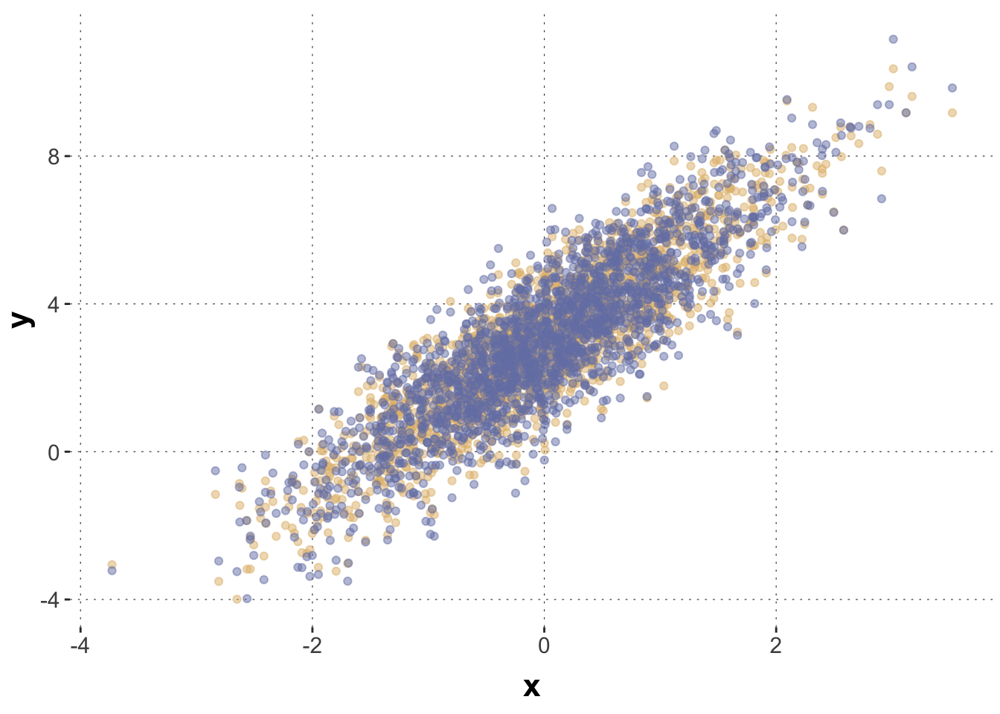
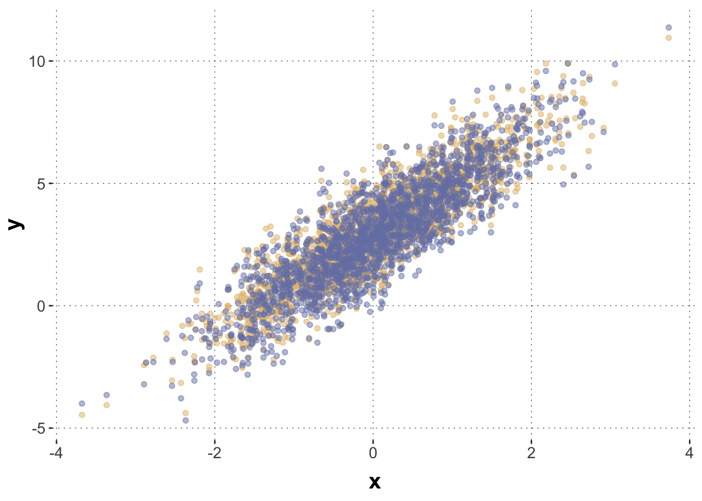

Multi-membership models are useful in cases where group-level effects are plausible but elements do not necessarily belong just to a single group. For example, if we want to include group-level effects for the native language (of participants in an experiment), some individuals may have more than one. Individuals with more than one native language would belong to multiple groups, whence the term multi-membership models. Moreover, there are cases where membership in a group is a matter of degree: if a grouping of individuals is by “country of residence”, for example, some people might spend variable amounts of time in different countries, and our model may want to account for that.
Preamble
Here is code to load (and if necessary, install) required packages, and to set some global options (for plotting and efficient fitting of Bayesian models).
Toggle code
# install packages from CRAN (unless installed)pckgs_needed <-c("tidyverse","brms","rstan","rstanarm","remotes","tidybayes","bridgesampling","shinystan","mgcv")pckgs_installed <-installed.packages()[,"Package"]pckgs_2_install <- pckgs_needed[!(pckgs_needed %in% pckgs_installed)]if(length(pckgs_2_install)) {install.packages(pckgs_2_install)} # install additional packages from GitHub (unless installed)if (!"aida"%in% pckgs_installed) { remotes::install_github("michael-franke/aida-package")}if (!"faintr"%in% pckgs_installed) { remotes::install_github("michael-franke/faintr")}if (!"cspplot"%in% pckgs_installed) { remotes::install_github("CogSciPrag/cspplot")}# load the required packagesx <-lapply(pckgs_needed, library, character.only =TRUE)library(aida)library(faintr)library(cspplot)# these options help Stan run fasteroptions(mc.cores = parallel::detectCores())# use the CSP-theme for plottingtheme_set(theme_csp())# global color scheme from CSPproject_colors = cspplot::list_colors() |>pull(hex)# names(project_colors) <- cspplot::list_colors() |> pull(name)# setting theme colors globallyscale_colour_discrete <-function(...) {scale_colour_manual(..., values = project_colors)}scale_fill_discrete <-function(...) {scale_fill_manual(..., values = project_colors)}
Multi-membership group-level effects
To understand multi-membership models, consider first a normal (non-multi-membership) group-level modeling approach. Say that each observation \(i\) belongs to exactly one of \(k\) categories \(c(i) \in \{1, \dots, k\}\). A group-level intercept consists of a vector of additive offsets \(\vec{u} = \langle u_{1}, \dots, u_{k} \rangle\), one adjustment \(u_{i}\) for each category \(i\). The linear predictor for observation \(i\) is computed by adding the appropriate group-level offset to the population-level intercept, like so:
\[
\eta_i = \beta_0 + u_{c(i)} + \dots
\]
Instead of an indexing function \(c(i)\), which returns the category index for each observation \(i\), this can also be written using a one-hot vector encoding. Let, \(\vec{\delta}_i\) be a vector of length \(k\) which contains only zeros, except in position \(c(i)\), where it contains a 1. Then we can equivalently write the equation for the linear predictor term as:
For example, if there are only four categories, and if observation \(i\) belongs to the third category (\(c(i)=3\)), we have \(\delta_i = \langle 0,0,1,0 \rangle\), so that the dot product \(\vec{u} \cdot \vec{\delta}_i\) will just return the value of \(\vec{u}\) at position 3.
From here, it’s just one step further to a multi-membership model. Instead of a one-hot vector encoding for group-membership, consider a vector of (normalized) weights \(\vec{w}_i\) given the relative degree to which observation \(i\) belongs to each category. The linear predictor is then:
and that’s all to it. Similar considerations apply to random slopes.
Importantly, the weights \(\vec{w}_i\) are given (from observation). (I am not aware that brms allows to estimate the weights as well. If that would be a requirement, directly coding the model in Stan might be necessary.)
Simulated data set of multi-membership effects
To explore how a multi-membership model can recover the true effects of weighted membership, we use a simulated data set based on a vanilla linear regression (with one predictor term). The true population-level parameters are:
For group-level effects, assume that there are five groups. Each has a true additive offset (random intercept) as follows:
Toggle code
# true parameters (group-level):# - there are five groups# - random intercepts for each group# -> sequence -0.8 -0.4 0.0 0.4 0.8group_Intercepts =seq(from =-0.8, to =0.8, length.out =5)
Here are samples from a model, in which each individual observation (each row) can belong to variable degree to one of two groups.
This plot shows the simulated data, where the points in blue show the actual observations, and the points in yellow show the data before applying the group-level effects.
Toggle code
# unperturbed data in yellow, observed data in blue data_multiMember |>ggplot(aes(x,y)) +geom_point(aes(x = x ,y = y_pop), color = project_colors[3], alpha =0.5) +geom_point(color = project_colors[1], alpha =0.5)

To run a multi-membership model in brms, there is special syntax for the group-level effects. Writing + (1 | mm(g1, g2)) indicates random intercepts for multi-membership as indicated by the vectors g1 and g2. Without further information, this is interpreted as belonging equally to each group (weights 0.5 for each, if we have two possible group memberships). If membership is weighted, as indicated in our data set in columns w1 and w2, this can be expressed as: + ( 1 | mm(g1, g2, weights = cbind(w1, w2)). (NB: the weights argument expects a matrix, so that we need to include cbind() here.)
Toggle code
# multi-membership model with two members per group and equal weightsfit_mm <- brms::brm(formula = y ~ x + ( 1|mm(g1, g2, weights =cbind(w1, w2))), data = data_multiMember,control =list(adapt_delta =0.99) )
Did the model recover the true group-level intercepts? It did, check it:
Construct a new data set (using the previous code), in which there is a (mild) bias in group membership. Concretely, add bias to the sampling of variables g1 and g2, making it more likely for g1 to be a lower rather than higher indexed group, and reversely for g2. Also, add a bias in the weights towards g1 by changing the shape parameters of the Beta distribution. This should induce an overall bias towards random intercepts that lower the linear predictor.
Plot the new data using the previous plotting code.
# unperturbed data in yellow, observed data in blue data_multiMember |>ggplot(aes(x,y)) +geom_point(aes(x = x ,y = y_pop), color = project_colors[3], alpha =0.5) +geom_point(color = project_colors[1], alpha =0.5)

Exercise 1b: Check parameter recovery
Fit a multi-membership model to the new data and check if group-level parameters are recoverable still. How do you interpret the results: did the model recover the true parameters or not?
[If you want: Think about what influences recoverability.]
Solution
Toggle code
# multi-membership model with two members per group and equal weightsfit_mm <- brms::brm(formula = y ~ x + ( 1|mm(g1, g2, weights =cbind(w1, w2)) ), data = data_multiMember,control =list(adapt_delta =0.99) )tidybayes::summarise_draws(fit_mm) |>filter(grepl("r_",variable)) |>select(variable, q5, mean, q95)
The recovery is not as immaculate as without the bias, but it is still okay.
Exercise 1c: Compare multi-membership model to vanilla
Run a vanilla regression model for the biased data, i.e., without group-level effects. Compare the models based on a simple posterior predictive check with pp_check(). What do you conclude from this?
Compare the models based on their posterior predicitive adequacy, e.g., using LOO model comparison (if you can; maybe you have not learned about this yet). Interpret the results.
Solution
Toggle code
fit_vanilla <- brms::brm(formula = y ~ x, data = data_multiMember )pp_check(fit_mm)